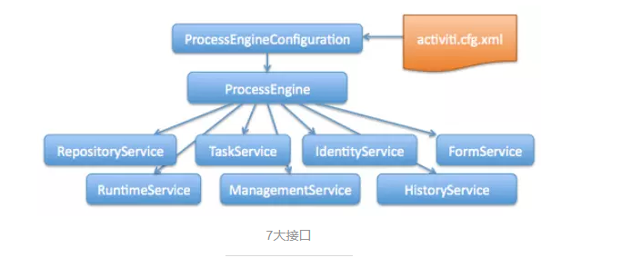
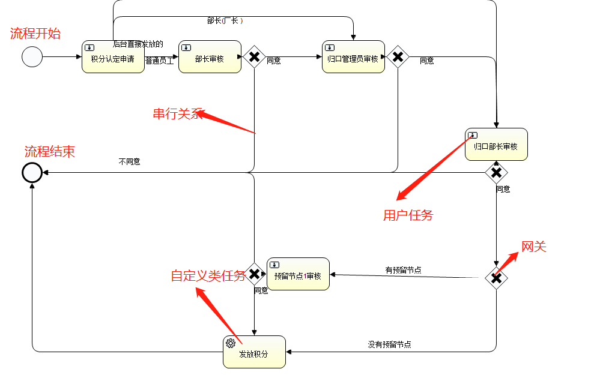
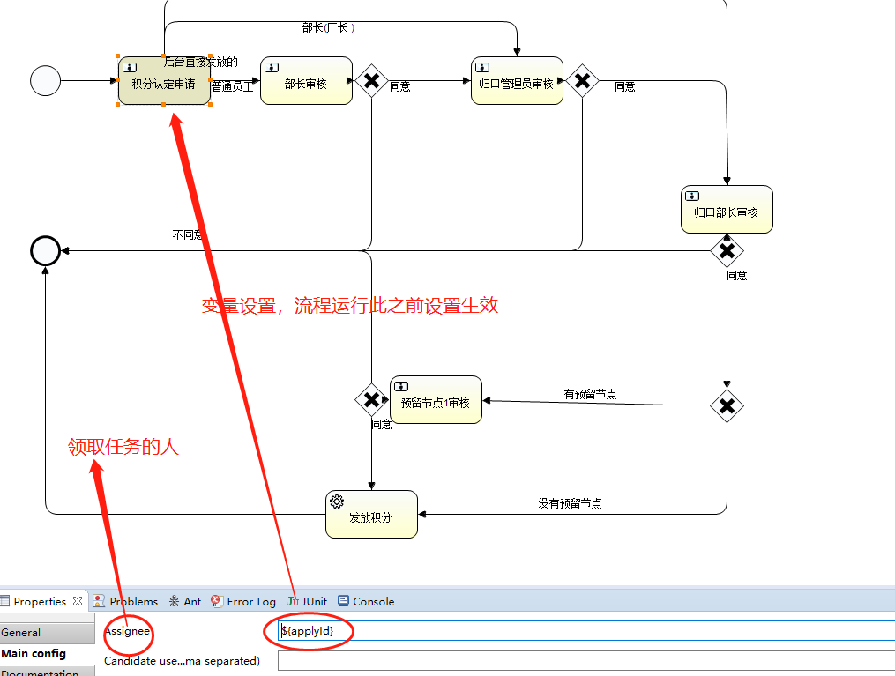
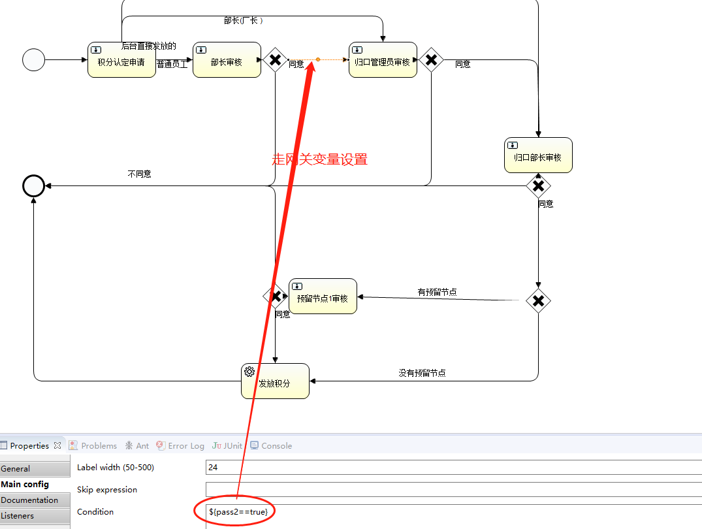
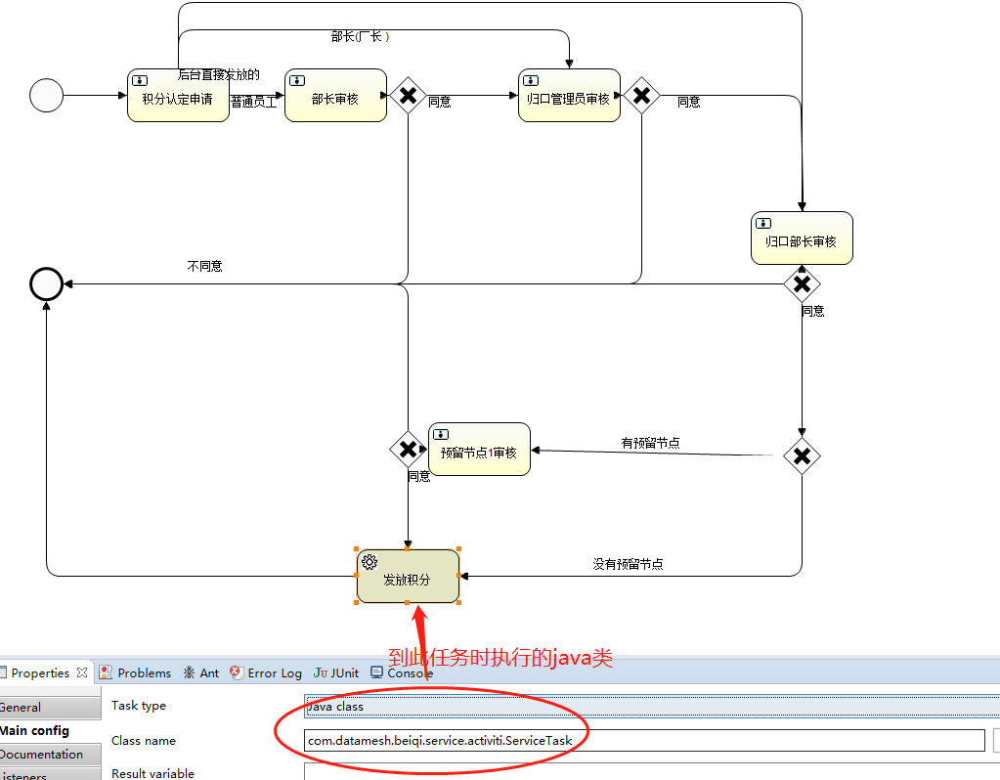
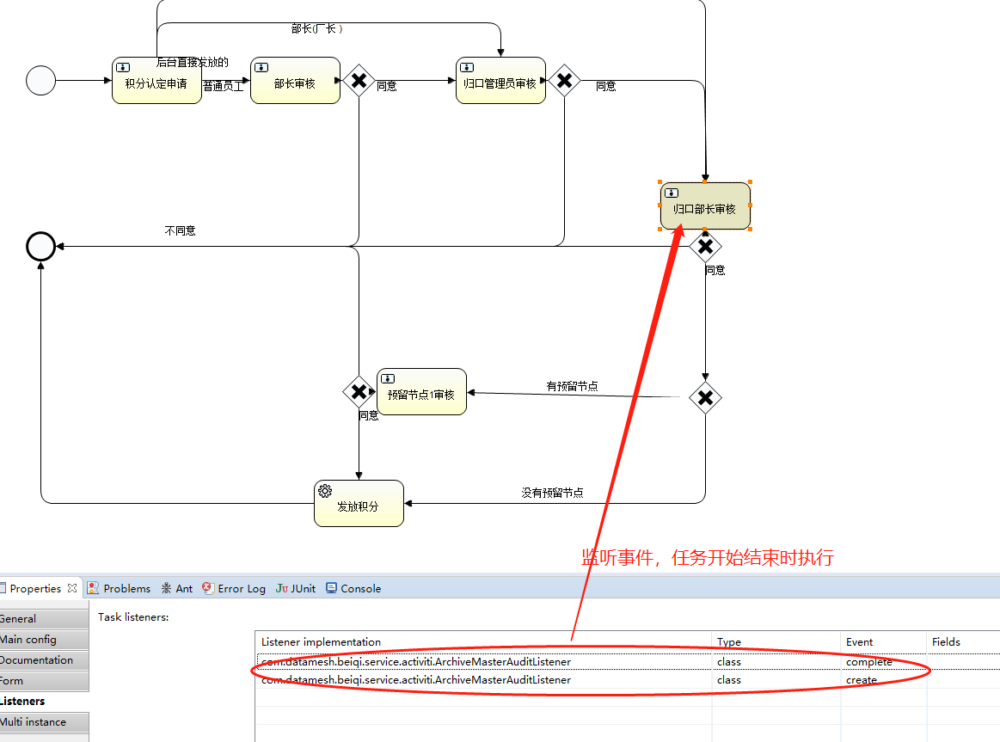
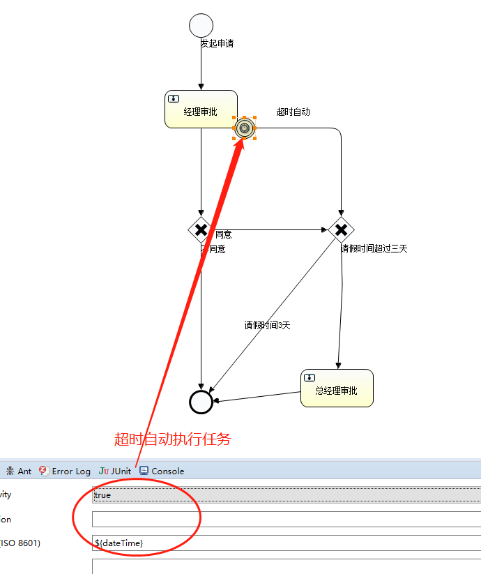
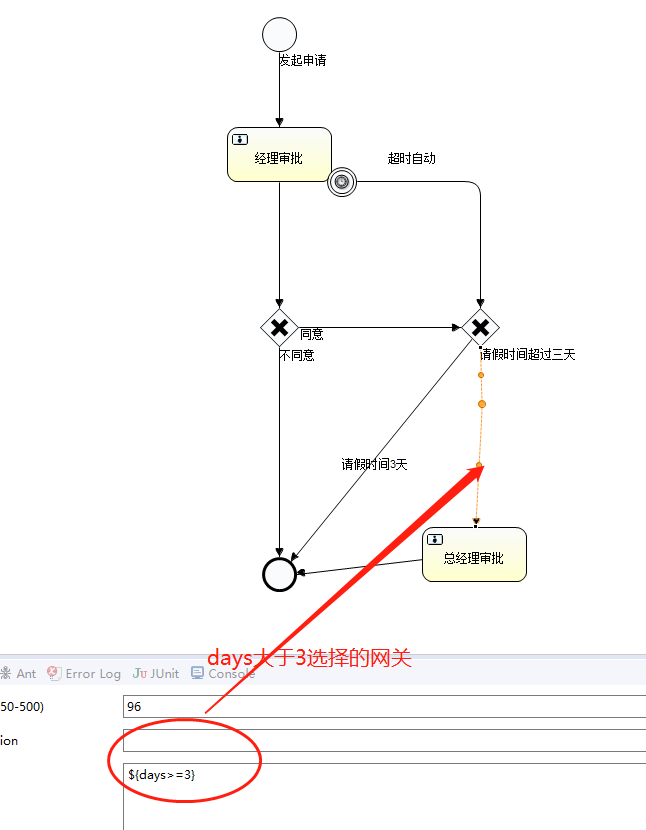
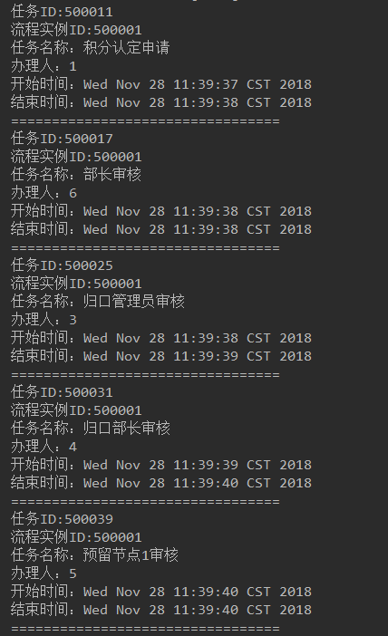

activiti能干啥
1. activiti 是一种使用*.bpmn文件定义流程，管理流程的一种框架
1. 我们只需定义工作流，部署工作流就能执行工作流，实现工作流自动化
核心知识点

几大接口
1. RepositoryService，提供一系列管理流程部署和流程定义的API
1. RuntimeService，在流程运行时对流程实例进行管理与控制
1. TaskService，对流程任务进行管理，例如任务提醒、任务完成和创建任务等
1. HistoryService,对流程的历史数据进行操作，包括查询、删除这些历史数据
表结构
1. act_hi_ 历史数据表，hi是history的缩写，对应HistoryService接口
1. act_re_ 流程存储表，re是repository的缩写，对应RepositoryService接口，存储流程部署和流程定义等静态数据
1. act_ru_ 运行时数据表，ru是runtime的缩写，对应RuntimeService接口和TaskService接口，存储流程实例和用户任务等动态数据
代码实战
[github代码]()
1. spring-boot maven 支持
1
2
3
4
5
6
<!-- https://mvnrepository.com/artifact/org.activiti/activiti-spring -->
<dependency>
<groupId>org.activiti</groupId>
<artifactId>activiti-spring</artifactId>
<version>6.0.0</version>
</dependency>
2. 配置关键代码
1
2
3
4
5
6
7
8
9
10
11
12
13
14
15
16
17
18
19
20
21
22
23
24
25
26
27
28
29
30
31
32
33
34
35
36
37
38
39
40
41
42
43
44
45
46
47
@Configuration
public class ActivitiConfig {
@Bean
public ProcessEngine processEngine(DataSourceTransactionManager transactionManager, DataSource dataSource) throws IOException {
SpringProcessEngineConfiguration configuration = new SpringProcessEngineConfiguration();
//自动部署已有的流程文件
Resource[] resources = new PathMatchingResourcePatternResolver().getResources(ResourceLoader.CLASSPATH_URL_PREFIX + "processes/*.bpmn");
configuration.setTransactionManager(transactionManager);
configuration.setDataSource(dataSource);
configuration.setDatabaseSchemaUpdate("true");
configuration.setDeploymentResources(resources);
configuration.setDbIdentityUsed(false);
return configuration.buildProcessEngine();
}
@Bean
public RepositoryService repositoryService(ProcessEngine processEngine) {
return processEngine.getRepositoryService();
}
@Bean
public RuntimeService runtimeService(ProcessEngine processEngine) {
return processEngine.getRuntimeService();
}
@Bean
public TaskService taskService(ProcessEngine processEngine) {
return processEngine.getTaskService();
}
@Bean
public HistoryService historyService(ProcessEngine processEngine) {
return processEngine.getHistoryService();
}
@Bean
public ManagementService managementService(ProcessEngine processEngine) {
return processEngine.getManagementService();
}
@Bean
public IdentityService identityService(ProcessEngine processEngine) {
return processEngine.getIdentityService();
}
}
3. 流程文件定义，路径resources/processes/*.bpmn







4. application.properties属性设置
1
2
3
4
#保存历史数据级别设置为full最高级别，便于历史数据的追溯
spring.activiti.history-level=full
# 自动部署验证设置:true-开启（默认）、false-关闭
spring.activiti.check-process-definitions=true
5. 代码测试
1
2
3
4
5
6
7
8
9
10
11
12
13
14
15
16
17
18
19
20
21
22
23
24
25
26
27
28
29
30
31
32
33
34
35
36
37
38
39
40
41
42
43
44
45
46
47
48
49
//发布流程
@Test
public void startFlow() {
Map<String, Object> variables = new HashMap<String, Object>();
variables.put("applyId", 1);
variables.put("masterId", 2);
variables.put("archivorId", 3);
variables.put("archiveMasterId", 4);
variables.put("obligateId", 5);
variables.put("next", true);
//参数businessKey, variables为可选参数
ProcessInstance processInstance = runtimeService.startProcessInstanceByKey("integral", variables);
System.out.println("id:" + processInstance.getId() + ",activitiId:" + processInstance.getActivityId());//22501
Task task1 = taskService.createTaskQuery().taskAssignee(String.valueOf(1)).list().get(0);
Map<String, Object> variables1 = new HashMap<>();
variables1.put("pass1", true);
variables1.put("type", 1);
taskService.setVariableLocal(task1.getId(), "applyId", 1);
taskService.complete(task1.getId(), variables1);
//部长
Task task2 = taskService.createTaskQuery().taskAssignee(String.valueOf(2)).list().get(0);
taskService.setAssignee(task2.getId(), String.valueOf(6));
Task task21 = taskService.createTaskQuery().taskAssignee(String.valueOf(6)).list().get(0);
Map<String, Object> variables2 = new HashMap<>();
variables2.put("pass2", true);
taskService.complete(task21.getId(), variables2);
//归口
Task task3 = taskService.createTaskQuery().taskAssignee(String.valueOf(3)).list().get(0);
Map<String, Object> variables3 = new HashMap<>();
variables3.put("pass3", true);
taskService.complete(task3.getId(), variables3);
//归口部长
Task task4 = taskService.createTaskQuery().taskAssignee(String.valueOf(4)).list().get(0);
Map<String, Object> variables4 = new HashMap<>();
variables4.put("pass4", true);
variables4.put("price", 10);
taskService.complete(task4.getId(), variables4);
//
Task task5 = taskService.createTaskQuery().taskAssignee(String.valueOf(5)).list().get(0);
Map<String, Object> variables5 = new HashMap<>();
variables5.put("pass6", true);
taskService.complete(task5.getId(), variables5);
historyTaskList(processInstance.getId());
}
6. 监听类设置
1
2
3
4
5
6
7
8
9
10
public class ObligateAuditListener implements TaskListener {
@Override
public void notify(DelegateTask delegateTask) {
if (delegateTask.getEventName().equals("create")) {
}
if (delegateTask.getEventName().equals("complete")) {
}
}
